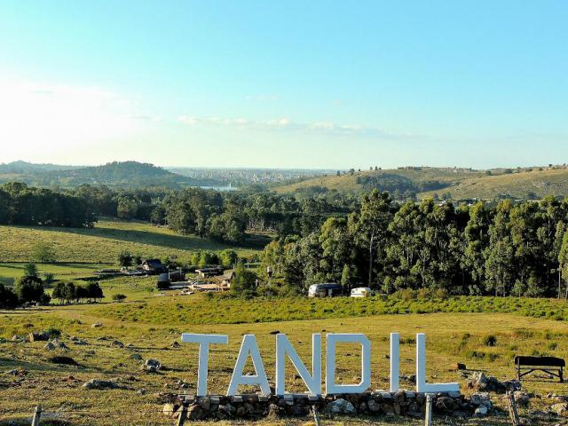

Tandil 2026: Refugio de Valor
Rentabilidad neta superior al 5% anual en alquileres temporales premium impulsados por el sector tech.
Leer análisis completoAnalizamos el crecimiento urbano y las oportunidades de inversión en el sudeste bonaerense para capitales globales.

Tandil: El equilibrio perfecto entre ciudad y naturaleza.
Un reciente estudio liderado por investigadores del CONICET ha vuelto a posicionar a Tandil en el podio de las ciudades con mayor bienestar. El Índice de Calidad de Vida (ICV) destaca a nuestra ciudad por su entorno ambiental y su desarrollo social.
En el contexto económico actual de Argentina, el mercado inmobiliario de Tandil ha demostrado una resiliencia excepcional. A diferencia de los activos financieros volátiles, la tierra en el sudeste bonaerense mantiene una curva de apreciación constante, impulsada por la escasez de lotes con servicios en zonas de sierras.
Análisis de Mercado Inmobiliario 2026La expansión de la red de fibra óptica hacia las zonas periféricas ha cambiado el paradigma del Real Estate local. Hoy, barrios como Don Bosco y El Centinela son centros operativos para la industria del software.
Rentabilidad neta superior al 5% anual en alquileres temporales premium impulsados por el sector tech.
Leer análisis completo
Marcos impositivos y la creciente demanda de "Lifestyle Homes" para expatriados y ejecutivos IT.
Ver marco legal
Cómo las certificaciones sustentables están impactando en el valor de tasación real hoy en día.
Explorar tendenciasUrbanGrowth no es solo un portal de datos; es un observatorio dedicado a descodificar el futuro de las ciudades intermedias. Creemos que Tandil representa el modelo ideal de "Ciudad de los 15 minutos" adaptada al entorno natural.
Nuestro equipo analiza mensualmente variables del mercado local para ofrecer reportes de precisión.